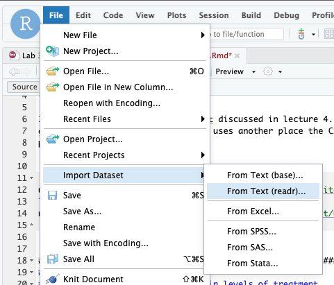

BIOS 1 - Homework 1
Levi Waldron
2023-03-02
Homework1.RmdSource code and data for this assignment
Note: The code used to create this document is here.
In this homework we will use the NHEFS dataset introduced in week 4. Take a look at the codebook linked to from https://www.hsph.harvard.edu/miguel-hernan/causal-inference-book/.
Download the dataset and import it into R. Try using the File - Import Dataset - From text (readr) menu option to do this import yourself.

Here is code to directly import the NHEFS dataset from the web. Note
use of the knitr code chunk option cache=TRUE to cache the
results locally and avoid downloading from the web each time you run
your program.
library(readr)
nhefs <- read_csv("https://cdn1.sph.harvard.edu/wp-content/uploads/sites/1268/1268/20/nhefs.csv")## Rows: 1629 Columns: 64
## ── Column specification ────────────────────────────────────────────────────────
## Delimiter: ","
## dbl (64): seqn, qsmk, death, yrdth, modth, dadth, sbp, dbp, sex, age, race, ...
##
## ℹ Use `spec()` to retrieve the full column specification for this data.
## ℹ Specify the column types or set `show_col_types = FALSE` to quiet this message.Question 1: customizing read_csv
Using help from the Import Dataset tool demonstrated above, change
the above read_csv command to import any factor
(categorical) variables in the first 15 columns as factors instead of
double (numeric). You don’t need to recode their numeric values yet.
Question 2: recoding
You will use the following variables. For those that are factors, use
the dplyr case_match function to recode them to informative
factor levels. For yes/no factors use “no” as the reference category,
and for other factors use whichever is the most common group as the
reference category.
activeageeducationexerciseracesexsmokeintensitysmkyrswt82_71
Question 3: Table 1
Use the table1 package (or an alternative of your
choice) to make a “Table 1” summarizing the above variables. Use the
table1::label command to create informative labels for
these variables in your table.
Question 4: draw a DAG
- Use http://www.dagitty.net/ to create a DAG for the following hypothesis. Use the R dagitty package to display this DAG in your document:
-
wt82_71is caused byqsmk(in particular, that quitting smoking causes weight gain) -
sex,race,age,education, andexerciseare hypothesized confounders.
Write out in words this research hypothesis, using the meanings of these variables rather than just their variable names.
Also write out in words the null hypothesis for statistical testing. Why would you have a two-sided null hypothesis even when in this case the research hypothesis is one-sided?
Question 5: fit a regression model
Fit the following multiple linear regression model (note that age
squared is represented in model formula by I(age^2)):
\[ wt82\_71 \sim qsmk + sex + race + age + age^2 + education + exercise \]
See https://www.oreilly.com/library/view/the-r-book/9780470510247/ch009-sec009.html for a convenient summary of how to use R model formulae.
Question 6: standardization
- Calculate the mean predicted outcomes under treatment (quitting smoking) and no treatment (not quitting smoking).
- Calculate the difference between these to estimate the causal effect of quitting smoking on change in weight.
- Is the conditional average treatment effect that you estimated using
standardization the same or different than the coefficient for
qsmkin the table of regression coefficients?
Question 7: DAG and regression with interactions
Now suppose we hypothesize that smoking intensity also impacts weight loss, and modifies the effect of quitting smoking on weight loss.
- Draw a new DAG that incorporates these hypothesized effects of smoking intensity.
- Fit a new linear regression model that includes a linear and
quadratic term for
smokeintensity(as above with age) and an interaction betweenqsmkandsmokeintensity.
Question 8: standardization with interactions
- Again use standardization to calculate the conditional average treatment effect of quitting smoking in this sample.
- Is this estimate the same or different than the coefficient for
qsmkin the new table of regression coefficients from Question 7?
Question 9: bootstrap
- Write a function that takes two arguments:
function(x, d)where:
-
xis a dataframe or tibble of your data -
dis an integer vector of row IDs that will be used to choose a subset of the dataframe, for example usingdplyr::slice(x, d)
Using the subset dplyr::slice(x, d), your function
should perform the same calculation as Question 8a, returning the
conditional average treatment effect for the same model with the
interaction term.
Show the output of calling your function using
d = 1:nrow(x)to confirm that this gives the same result as 8a.Estimate a 95% bootstrap confidence interval for the conditional average treatment effect, using at least 1000 replications. You are welcome to use your favorite method to implement this bootstrap, but I recommend the
bootlibrary which is powerful and simpler to use than programming your own simulation.Summarize your findings. Is the effect of quitting smoking on weight change significant? What is the effect? Is it modified by baseline smoking intensity?
Question 10: what did those quadratic terms do?
Use the coefficients of age and I(age)^2 to
plot the conditional relationship between age and weight change for the
participants in this study. Specifically, use the ages of the
participants in this study to calculate
\[ y = \beta_{age} * age + \beta_{I(age)^2} * age^2 \] then create a scatterplot of y vs age. How did the quadratic term change the modeled association between age and weight change, compared to a linear term only?